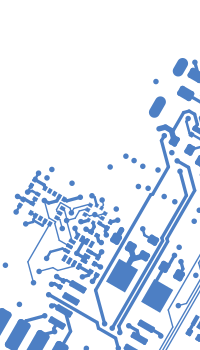

Serena Lynas


I am Serena Lynas, a student at Case Western Reserve University, and I am hoping to start a career in software engineering after graduation in May of 2026. I have a broad educational background in computer science and physics and applied experience in hardware and software for embedded systems — see some of my work below!
I'm a double major, expecting to finish both in May 2026:
- Computer Science, BS
- Mathematics and Physics, BS
Here's what I like to use:
- OS: Linux Mint and Ubuntu
- Languages: Rust, C/C++, JavaScript/TypeScript, Python, Java, LaTeX
- Libraries: React, SolidJS, Embassy-rs
- Tools: Git, KiCad, VSCode
 As the avionics lead of Case Rocket Team, I designed, routed, and programmed a flight computer and I had it produced through JLCPCB. The board features an STM32H7 processor and various instruments, including a LoRa radio, GPS, and barometer. The rest of the avionics subteam and I wrote the code in both Rust and C (using FFI).
As the avionics lead of Case Rocket Team, I designed, routed, and programmed a flight computer and I had it produced through JLCPCB. The board features an STM32H7 processor and various instruments, including a LoRa radio, GPS, and barometer. The rest of the avionics subteam and I wrote the code in both Rust and C (using FFI).- Languages & Libraries: Rust, C, Embassy-rs, CMSIS-DSP
- Hardware & Protocols: STM32H7, LoRa, USB, SPI
- My role: software (both robot control and React frontend)
In a short 10-week internship at Los Alamos National Laboratory, I worked in a small team with mechanical engineering student and a controls student to build an automated prototype to mix polymer-bound high explosives.
- Languages & Libraries: Rust, TypeScript/JavaScript, React, Linux
- Hardware: UR16e Collaborative Robot, Raspberry Pi
- My role: software (both robot control and React frontend)